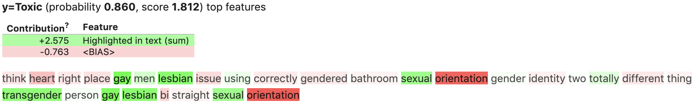
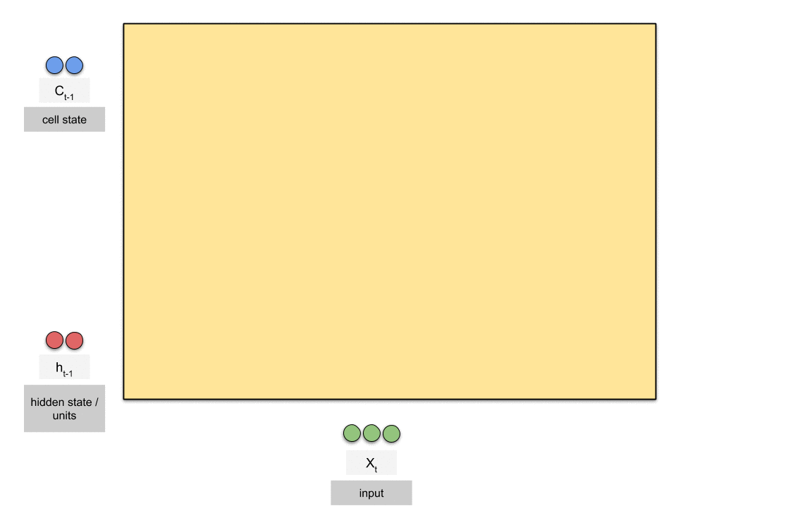

There remains entreched biases against minorities in society which is reflected in the data.
Traditional ML models and NLP processes are highly sensitive to this existing bias.
As a result, words referring to minority identities become associated with toxicity.
To highlight this issue we have run our Logistic Regression model through the ELI5 package. The below comment was originally labelled 'Non-Toxic' however our model has missclassified it as 'Toxic'.

Our aim is to train a neural network model, primarily an LSTM model, to classify toxic comments.

We also trained a handful of traditional models, namely: Logistic, XGBoost, and Random Forest, to allow us to compare results
Non-Toxic:
Toxic:
| Model | Accuracy | F1 | Final Bias Metric |
|---|---|---|---|
| Logistic | 94.7% | 59.9% | 71.3% |
| XGBoost | 94.4% | 53.7% | 71.3% |
| Random Forest | 94.2% | 47.9% | 61.1% |
| LSTM | 95.3% | 68.1% | 92.0% |
For this problem we are using a specialized bias metric developed by Jigsaw AI the metric effectively calculates false positive and false negative rates against specific identity subgroups and then calculates a weighted mean of the AUCs for each subgroup. The exact calculations can be found here.
As a summary we follow these steps: